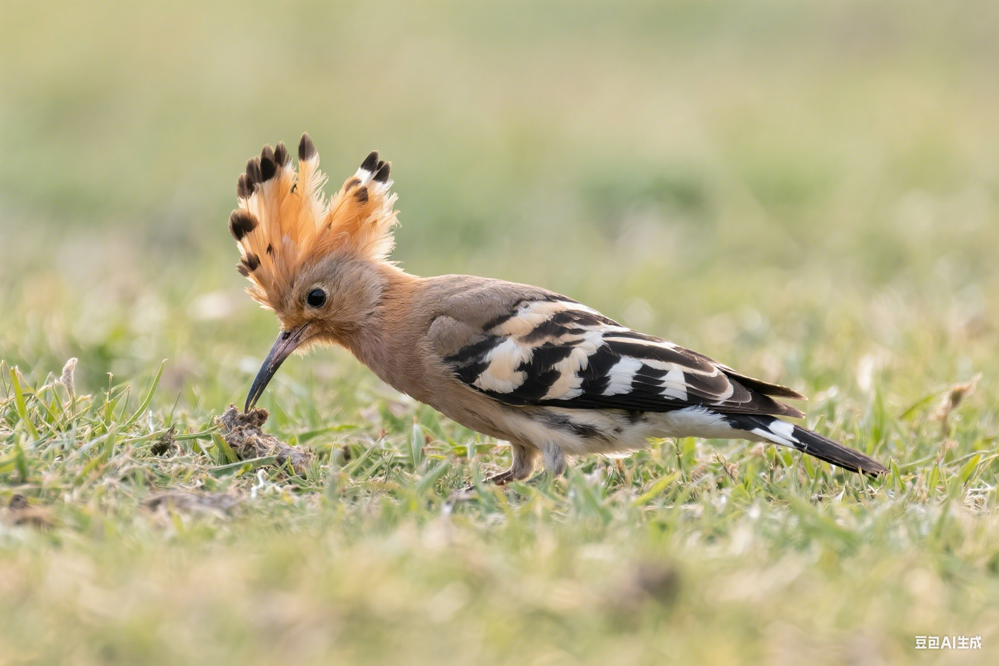

"季节的变化会影响鸟类的生理和心理状态，适应性护理是保持它们健康的关键。"
— 鸟类行为学家🌸 春季护理要点
春天是鸟类最活跃的季节，也是繁殖期的开始。这个时期需要特别关注营养和环境管理：
春季 (3-5月)
🍃 营养调整
- 增加蛋白质含量，支持羽毛更新
- 提供新鲜绿叶蔬菜和发芽种子
- 补充维生素E和钙质
- 逐渐增加食物分量
🏠 环境管理
- 增加日照时间，模拟自然光照
- 保持室温在20-25°C
- 提高清洁频率，预防细菌滋生
- 准备繁殖用品（如有繁殖计划）
🩺 健康监测
- 观察换羽情况
- 检查繁殖行为变化
- 预防春季常见疾病
- 安排年度健康检查
☀️ 夏季护理要点
夏季高温需要特别注意防暑降温和水分补充：
夏季 (6-8月)
🌡️ 温度控制
- 保持室温在22-28°C之间
- 提供充足的通风
- 避免阳光直射笼子
- 使用风扇或空调调节温度
💧 水分管理
- 增加饮水器数量
- 每日更换新鲜饮水
- 提供浅水盆供洗浴
- 增加含水量高的水果
🍎 饮食调整
- 减少高脂肪食物
- 增加新鲜水果和蔬菜
- 避免食物变质
- 调整喂食时间到较凉爽时段
🍂 秋季护理要点
秋季是为冬季做准备的重要时期，需要加强营养储备：
秋季 (9-11月)
🌰 营养储备
- 逐渐增加脂肪含量
- 提供坚果和种子
- 补充维生素A和D
- 增加食物总量
🪶 换羽护理
- 提供高蛋白食物
- 保持环境安静
- 避免过度打扰
- 清理脱落的羽毛
🏠 环境准备
- 检查保温设备
- 调整光照时间
- 准备冬季用品
- 加强笼子保温
❄️ 冬季护理要点
冬季是最具挑战性的季节，保温和营养是关键：
冬季 (12-2月)
🔥 保温措施
- 使用鸟类专用加热器
- 提供温暖的栖息处
- 避免温度骤变
- 监控室内湿度
🥜 高能量饮食
- 增加脂肪和碳水化合物
- 提供温热的食物
- 增加喂食频率
- 确保饮水不结冰
💡 光照补充
- 使用全光谱灯具
- 保持10-12小时光照
- 模拟自然日照节律
- 预防季节性抑郁
🌡️ 季节转换期护理
季节转换期间，鸟类需要时间适应环境变化：
🔄 渐进式调整
- 温度调整应循序渐进
- 饮食改变需要过渡期
- 光照时间逐步调整
- 观察鸟类适应情况
⚠️ 适应不良信号
- 食欲明显下降
- 活动量异常减少
- 羽毛状态变差
- 行为异常或焦躁
📅 季节性护理日历
制定详细的季节性护理计划：
🌸 春季任务清单
- 3月：开始增加蛋白质摄入
- 4月：准备繁殖环境
- 5月：监测繁殖行为
☀️ 夏季任务清单
- 6月：加强通风和降温
- 7月：增加洗浴频率
- 8月：预防中暑和脱水
🍂 秋季任务清单
- 9月：开始营养储备
- 10月：支持换羽过程
- 11月：准备冬季设备
❄️ 冬季任务清单
- 12月：启动保温措施
- 1月：监控健康状况
- 2月：准备春季转换
🏠 室内环境优化
根据季节调整室内环境设置：
🌡️ 温湿度控制
春季
20-25°C
50-60%
夏季
22-28°C
40-50%
秋季
18-24°C
50-60%
冬季
20-26°C
45-55%
💡 光照管理
- 春夏：12-14小时光照
- 秋冬：10-12小时光照
- 使用定时器自动控制
- 模拟自然日出日落
🩺 季节性健康提醒
🌸 春季
注意呼吸道感染，花粉过敏
☀️ 夏季
预防中暑，食物中毒
🍂 秋季
支持换羽，增强免疫
❄️ 冬季
防止感冒，维持体重
🚨 季节性紧急情况
- 春季：繁殖相关问题，过度兴奋
- 夏季：中暑，脱水，食物中毒
- 秋季：换羽困难，营养不良
- 冬季：体温过低，呼吸道疾病